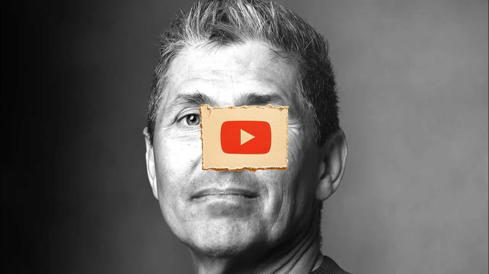

Great Pods
What Happens After Spending Decades in Prison-Michael Santos
Key Points
Michael Santos served a 45-year federal prison sentence for drug trafficking, starting at age 23 in 1987
He was inspired by the movie Scarface to enter the cocaine trade, operating as a "kingpin" who hired others to transport drugs from Miami to Seattle
Two books transformed his perspective in solitary confinement: Frederick Douglass's biography and Plato's Republic
He developed a three-part plan for prison: get an education, contribute to society meaningfully, and build a support network
Santos earned undergraduate and graduate degrees while incarcerated, studying the prison system and writing about it
He published multiple books and academic articles from prison, including "About Prison" and "Profiles from Prison"
Met and married his wife Carol in 2003 while still imprisoned, after she contacted him about a high school reunion
Released in 2012 after serving 26 years (including halfway house time), having progressed from maximum security to minimum security facilities
Became a university professor immediately after release, teaching courses on incarceration and criminal justice
Founded the nonprofit "Prison Professors" to help incarcerated individuals prepare for successful reentry
His program "Preparing for Success After Prison" now reaches over one million people in federal prisons nationwide
Advocates for prison reform, arguing that the current system perpetuates cycles of failure and recidivism
Created PrisonProfessorsTalent.com, a free platform for incarcerated individuals to document their rehabilitation journey
Emphasizes that anyone can transform their life through education, self-direction, and taking personal responsibility
Believes the American prison system violates human rights by isolating people from technology and modern society
His approach focuses on helping people see themselves as more than their crimes and develop hope for the future
Continues advocacy work 12 years after release, speaking at judicial conferences and working to change public perception of incarcerated individuals
Demonstrates that with proper support and personal commitment, people can successfully reintegrate into society after long prison sentences
Full Transcript
Language: en my name is Michael Santos I'm the founder of prison professors and I started that really nonprofit because I was in prison serving a 45-year prison term although I live in Southern California right now the reality is I started in in a background that probably should have never led me to prison I grew up in North Seattle a community called Lake Forest Park on the North End of Lake Washington had every opportunity to lead a normal life but when I was about 20 years old I saw the movie Scarface and it put me in on a bad path my father had escaped from Cuba and actually I still remember driving down the road and hearing that story um of Tony Montana talking on the radio I said that dude sounds like a Cuban uh sounded like my father so I wanted to go see the movie really not knowing what it was about I wasn't a drug user but I was so enthralled by the movie hot chicks fast cars um super fun life and I thought that sounds like something I want to do but I didn't know anything I I didn't use drugs but I knew people who used cocaine so I started reaching out to to people I knew who used cocaine and I'd say well if you use cocaine isn't it logical that you bought cocaine from somebody and they said sure I said well do me a favor find out what it costs and I mean this is all the wisdom of a 20-year-old that's how old I was back in 1984 885 when this began and I learned the price of a kilogram back then in North Seattle was is I recall it somewhere in the $50,000 range so I made a phone call to some of the guys the the children of other people that my father escaped Cuba from well his name was Tony in Miami and I said Tony you live in Miami you went to high school in Miami you must know somebody who who sells cocaine he said sure I said find out how much does a kilogram of cocaine cost and he comes back to me and he says it's $220,000 and you know just do some simple math and I said I could buy it $220,000 um people are paying up here in Seattle north of $50,000 There's an opportunity here um but of course I didn't want to do it myself because I I I knew it was against the law this is really Before the War on Drugs Ronald Reagan is in the white house to give you some context of time and um I started asking some of my friends I said well you know if I pay you five grand would you fly to fly to Miami drive home with your girl and and traffic this cocaine with you bring it back to North Seattle and I found people who would do it so that's how I kind of got started but I also needed the money so I told my father a lie uh that I was going to help fund his or help him with his construction business buying construction equipment that was from a company that was going out of business I said I need to take some cash because I want to make a cash offer my whole mindset was I could take this money from my father buy the cocaine in Miami bring it back to Seattle have it sold put the money back in my dad's account and and and all be well I mean if you're were going to make $30,000 a kilo that was the goal I didn't realize that what I was really doing was making myself into a much more serious crime than if I were doing it myself I was putting myself in the role of a Kingpin so that lasted that transaction worked out well I made a few $100,000 as a 20-year-old which was all the money in the world and put the money back in my dad's account and then really just scaled from there and continued doing that from the time I was 20 until the time I was 22 or so people started to get arrested um they started to cooperate against me I went to uh hired an attorney he told me he said yeah there's an investigation going that's on but you're not yet a Target but I didn't want to stick around to be a Target so I moved to the south of Spain in a community called Marb and I started making my life there for several months but you know when you're living in Marb you you you kind of miss the United States I didn't even speak Spanish so it was hard for me to assimilate there so I called the attorney and I said is there is there has there been anything going on on this case of mine the attorney says um no I haven't heard anything so I decide to come back to the United States in August of 1987 after being gone for several months and it wasn't long thereafter that de agents came and pointed the gun at my face and said you know you're are you Michael Santos I said I am he said you're under arrest and uh that was the first like wakeup call that I've created a very big problem for myself they told me I was facing life in prison um I didn't understand what that meant all I knew is that I didn't get caught with any cocaine I didn't get caught with there were no telephone calls with me on there um they didn't find any money around me I did I was living a lifestyle that I couldn't explain um but I really wanted to believe that I could get out of this and I had an attorney who was telling me what I wanted to hear rather than what I needed to hear what I needed to hear was you've made some really bad decisions in your life and you're facing a serious crime uh a a serious sentence um and you should accept responsibility and and try and make amends but I I wasn't I wasn't getting that guidance from my attorney and I and and and so he was telling me what I wanted to hear and I decided great then let's go to trial but I was l locked in that first year I they never let me out on bail after that arrest so I'm locked in solitary confinement and I'd never been in custody before so you know I was 23 years old I didn't understand I didn't get an opportunity to talk with other people in jail because I'm in the I'm in the hole and and you know this is what I thought prison was going to be like and my lawyer just keeps telling me there's a big difference between an indictment and a conviction but you know anybody who's experienced the federal system would later learn there's not a big difference between an indictment and a conviction when you get charged with a crime in the federal system you are genuinely um you know good chance you're going to face a sentencing hearing but I didn't understand that and I really wanted to believe that I would walk out of here well it didn't turn out that way after about five or six months I went to trial several people with whom I was pretty close testified against me and said that I would had put this scheme together to traffic and cocaine where I would hire people that would fly down to Miami drive it across country distribute it to people store it so I was really in my mindset that if I didn't do anything I I if I didn't touch it myself I wasn't breaking the law but the crime that I was convicted of and charged with was called a 848 A continuing criminal Enterprise uh and it carried a possible sentence of life in prison so while going through a trial that lasted about a month where scores of people testified against me I just dug myself deeper I mean I took the witness stand and said I Didn't Do It um I the jury saw through it all and convicted me of every count and it was that moment that really my life began to change because when the marshals locked me in cuffs this time I knew I wasn't getting out of prison and I went back to the jail and I'm into solitary confinement and there was an officer that I wish I could thank because he really is the one that changed my life he he known me for several months while I was in the cell and he came to me and I and I remember him leaning against the window and just said how did it go and I said it really didn't go very well I was convicted of every count and now I'm facing life in prison and he said to me I've got something that I think can help you and I said you know what's that he said I'm going to bring you a book and it's amazing how a book can change your life and this was a book about Frederick Douglas I didn't know who Frederick Douglas was but he was a guy was born during the era of slavery and he uh you know didn't know any life other than than being a slave and he lived in that way for 20 years until he escaped and this is this message that I got out of that book is that when Frederick Douglas escaped he didn't go on to lead his own life and and be free instead he wanted to try and change the world and he he to do that he had to learn how to read he had to learn how to write and he had to learn how to communicate really well and that is really what led him to becoming one of the most influential abolitionist has led to the abolition of slavery so I I remember getting inspired by that and then officer his name was officer Wilson that's all I know of him uh brought me another book and it was Plato's Republic and you know I had been a terrible student in school but when you're in the hole for a long period of time that's your only form of communication your only form of connection to the world and I'm reading this Plato's Republic and it started off with this story called The creto of Socrates being in jail and he's facing death uh for the crime of wanting to teach other people and you know I thought that that was a a noble thing that Socrates really believed that every person had the right to try and become better it was just in his Society was against the law from people from one class to teach another so he broke the law he went to trial he was convicted and he was facing death but it but but but the leaders didn't really want to carry it through and his buddy his name was crto came to see Socrates in jail and he said to him I am um don't worry about it we're going to let you you know I've already worked it out with a Jailer your friends are going to support you in Exile you're going to walk out of here tonight and you can go on to live your life in peace and Socrates said no I'm going to stay and his friend CTO said what do you mean you're going to stay if you stay you're going to die and Socrates said yes I'm going to die and he said why would you do that and he said well I live in a democracy and a democracy I've got to take the good with the bad and this is a bad law but I would I I broke the law and I would rather die with my dignity intact than run away like a coward for problems that I created this Society has clothed me and fed me and protected me from foreign enemies and I have the right to change laws I don't agree with I don't have the right to break laws and I'll just say it was the combination of Frederick Douglas and Socrates that changed my life I remember putting the book on my chest and lineing back in that cell and just kind of staring as you're feeling the pressure of the walls and the ceiling closing in I haven't been sentenced yet I'm facing life in prison and thinking to myself is there some kind of way that I could make sense out of whatever is going to come and what was going to come was a sentence that it would be no less Le than 10 years and possibly life and I thought yeah there there probably is people who are familiar with Socrates may be familiar with this concept of Socratic questioning and asking questions and while I was sitting in that cell thinking about what was coming I started to think about well people I would imagine like your viewers who are just law-abiding citizens uh people who don't understand what it's like to go to prison I said is there anything that I could do while I'm in here anything would cause the world to see me not as a Coke trafficker but rather how do I respond to this and how do I make amends and reconcile with society and I said the answer is probably yes there is probably something that we could do but what is it and I didn't know the answer to that because the the the staff in in a jail setting is basically telling you if you can't do the crime don't do if you can't do the time don't do the crime and I didn't understand what it would be like but I but I wasn't thinking so much about my immediate environment I was thinking about the world to which I wanted to return and and I thought well what would the people that are going to have influence on my life expect from me and and I came across with this like three-pronged approach that was going to guide me through prison and one I think the people I'm going to meet that might have influence over my life they would want me to show I don't want to be a criminal anymore and one way I could do that would be to get an education and that became super important to me I said I'm going to find a way to get an educ a while I'm in custody and the second would be to uh find a way to contribute to society and some kind of meaningful measurable way and and the third would be I would have to build a support system a group of people that would believe in me and if I could do that I hoped that my journey through prison whatever length of time it was going to be would help me would would would give me a chance to come back to society strong with my dignity intact and opportunities to to build a life even though I'm going to be in prison for all of my 20s all of my 30s all of my 40s I didn't even know how long it was at that time I just knew I was going to be in prison for a long time and I got so inspired and know this was inspired by the story of Frederick Douglas and Socrates I can't say I did it myself I was really inspired by those people and so I remember getting up and you know you're in a solitary cell and I'm sitting on this little concrete bunk and I write a letter to the newspaper who'd been covering my trial and saying I made a lot of bad decisions I went to trial I denied what I had done the government had been press pressuring me to cooperate against others but I wasn't on that path I was just you know already convicted there was no getting out of jail at this point but I said maybe I could do something to make better maybe I could draw a line in the sand and that and I told the journalists if you want to know the story of what happened you know come and see me and that led to a journalist coming to visit me and I told them that I had deep regrets for the decisions that I had made and I was going to find a way to to emulate the the adjustment of Frederick Douglas or what I learned from Socrates and when I got to prison this is what I was going to do is to find a way to make it better and uh you know when somebody hears that kind of story I think that there's always it starts with a level of cynicism that that that something can happen and I accepted that and that's certainly what happened when I went to sentencing because a few months later they I I went to the sentencing hearing and I'll always remember the judge reading that article because it came out top of the fold in the newspaper and the judge read it before I was sentenced before I imposed sentence and the prosecutor got up and I'll always remember what he said that he said Michael Santos says he's going to change his life while he's in custody but you know the United States feels that if he spends every day of his life in an allc consuming effort to repay Society or to reconcile with Society we believe that even if he lives to be three 300 years old our society will be at a significant net loss and you know that it was kind of harsh to hear that at the time but it was also it was also the world in which I lived you know you you go into the criminal justice system and it is designed to obliterate hope and to tell you that you've got nothing coming at all and I I I felt that that was helpful to me to get that kind of news because it it prepared me for really what was coming and the marshals you know locked me in handcuffs and shackles and uh led me through the the system that takes you into the Federal Bureau of Prisons and I was convicted in Seattle but they transferred me to a high security penitentiary in Atlanta and at that time you know the prison system was much smaller there were only about 30,000 people in prison in the mid1 1980s but this was the era of the war on drugs and things were changing and uh you know you had Nancy Reagan make statements on television about just say no and Ronald Reagan saying that drugs were one of the biggest problems in society and the only way to respond to it was through lengthy sentences so I I got my judge sentenced me to 45 years in federal prison with no parole but because I had been in the hole for the first year I didn't even really know what that meant I didn't know am I going to be in prison for 45 years and that was kind of hard to conceive because I hadn't been alive that long but when I got to the penitentiary you know it was very different I went it was the most violent federal prison in the nation at the time and you know there was a lot of tension there but when I got there it was to me an amazing piece of Liberty because I'd been in the hole for a year and there was a 40-foot wall that went around the prison so I could I could see you know horizontally but you can't see over the wall so so so so it's it is somewhat confining the one thing that I could see is up and I could see the blue sky and I could breathe fresh air not in a metaphorical sense but in a literal sense because when you're in the hole You you don't have fresh air so breathing fresh air and seeing the Blue Sky really gave me hope and that's what I I I think is so important for people who are living in a crisis is to believe and to see you can become something more I'd love to say that was those are my own words but that's what I learned from these people I read about and I continued reading about people who had gone through struggle and challenges and it helped me realize there's going to be a way through this but it's not going to be by accident and and it's not going to be by happy talk and talking about what somebody else is going to do for me it's going to be something what can I do and because I'd never been incarcerated before I didn't even know how the system was organized I went to a high security penitentiary I just thought that's what was prison was like but you start hearing these messages about how to serve time and dur that's real was really important important during that first 30 days of of time in prison before I went to a uh what's called a team meeting and you meet with staff and I'm hearing from guys in prison who are telling me you know the the way to survive in here is to have a real ball of hate in your stomach and a knife and sure that's the way to survive if you want to live in prison and if you want this kind of life but by then I'd been incarcerated for a year and I hated every second of it I'd lost everything um that I had previously taken for granted and I knew I wanted to get out and some point get out and build a life a life that would lead to something better uh and and so I it was through that process that I started to hear about the prison system is divided there's high security penitentiaries and medium Securities and low Securities and minimum Securities and and I'd heard this from the other guys I was serving time with so finally I go to the this team meeting where I'm meeting with a case manager and a counselor and a unit and and I I I've got my plan of how I'm going to get through this and I remember asking them you know I've heard about these things called federal correctional institutions and lower security prisons I said is there any chance of me being able to transfer to one of those prisons and I and I'll always remember the unit manager telling me said you've been convicted of an 848 you're a drug kingpin and you are s a federal judge sentenced due to 45 years he said this is exactly where you were supposed to be and you'll be in this environment until you get out and um you know I didn't really understand what that meant but I understood that I I I'm in an environment where I'm going to be for a long time and I didn't know how to process it I'd heard by then about good time and I could finish the sentence in 26 years because I was convicted under a law that the the sentencing laws have changed since then since 1987 now the there's less good time but at that time be if you avoided disciplinary infractions you would get credit what's called good behavior and I learned I could set satisfy the sentence in 26 years so I I didn't even know what that meant because I wasn't I hadn't lived for 26 years and you know to kind put that perspective we're we're filming this in in 25 26 years you're looking at 2051 2052 how do you stay strong while you're going through that period of time and you know I didn't know the answer to that but I did have that plan that I got from Socrates and that's don't think about where I am right now think about how I want to get out of here and just as I did in the solitary Sal take a pencil and start writing letters I start writing letters to universities because that was the first plan I've got to demonstrate I don't want to be a criminal and it's kind of hard to do in a high security penitentiary where there's a tremendous amount of pressure all the time but if you've got a plan you you you can you can architect the strategy so my plan was to first of all I've got to focus on getting an education I really wanted to penetrate those 40 foot walls but the only way I could get on to the other side would be if I could learn how to put words into sentences and sentences into paragraphs and connect with people and I didn't know how to do that because I'd been such a a terrible student in high school so I start writing to universities you know and and basically you know my name is Michael Santos I'm in prison I made really bad decisions but I really want to be better is there any chance of going to school and you send one letter out you know you're probably not going to get a response you send 10 letters out you know I always say you got a 10 times better chance of not getting a response but if you could send out a hundred letters if you could really try to connect with the world somebody's going to respond and I I was very fortunate when I connected with a university that said okay we want you to give you a chance and I got enrolled in school and they sent me books and I remember when I got those books within the first couple of months of getting to the pen all of a sudden I didn't feel as if I was a prisoner anymore now I was a student and I was building my path and pursued that path of working toward an undergraduate degree and and as I got closer to getting that degree I wanted to go to law school and I started writing to law schools and and and and say making that same statement I've been in prison for a long time I'm I'm about to get my undergraduate degree and I want to continue with my education it was always a pathway that I believed would help me put put me on the pathway to New Opportunities so the law schools all wrote me back and said you know the American Bar Association will not allow us to Grant a degree to somebody who's not on campus and studying on campus but maybe one of them hofra Law School in New York wrote me back and said well you can't get to law school but maybe um we could do some we have more flexibility with a graduate degree what would you want to study and and my whole message was you I really think this concept of mass incarceration is one of the great social injustices of our time and it really afflicts you know poor people and people of color more than anyone else and I want to have a role in trying to change that and uh they were were receptive to that message and allowed me to start working toward a a master's degree and I studied the prison system and the people that holds so I was really kind of like um kind of like you mark in the sense that you get a be an ethnographer and tell people's stories in their own words and so I started to interview other people in prison and write their stories and then use them to teach in universities so I'd start sending them out to professors and I'd built this you might remember that earlier I said Fred Douglas kind of or Socrates inspired me to come up with this plan of getting an education contributing to society and building a support network well that that's kind of hard to get off the ground but once you get started you find it starts getting momentum and and uh it start once I got into college and I'd read about somebody who was doing something I'd write them a letter and introduce myself and some of them would invite me to contribute to their work they were interested oh I'd like to hear about prison and and that's who I would write to academics and professors who wrote about the prison system and that pathway really started to help me build my network so the three things really worked together where getting an education made it easier for me to connect with professors which made it easier for me to build a support network and I'd start writing the stories of the people around me and telling the story how did you get involved in crime what motivated you what have you learned from this experience and it started sending out and they invited these professors invited me to publish chapters in their books and then start writing for peer-reviewed journals and then some of my mentors they would come to visit me in prison and these were some of the leading penologists in the world uh and they would come to visit me in prison and and and and work with me and allow me to to write for them while I still had decades to serve in prison but that process really helped me build momentum and it and it gave me hope and it made me believe that I'm I'm executing this plan of preparing myself for what I want to do when I get out so so I um I got a a great opportunity to publish with with people that were some of the leading textbook authors who introduced me to their Publishers by the time I was in my I would say 10th year imprisonment uh I I got invited to work closely with a guy by the name of Professor George Cole who is the dean at the University of Connecticut and and wrote one of the leading textbooks on criminal justice and he suggested to me why don't you write a book that would be similar that would talk about your experience that we could use where my book is Theory you could write about what could we do better in the prison system and that led to the first book that I wrote called about prison uh and about prison was used was published by Wadsworth and was used in universities across the country and then I reached out to another Mentor who is Dr Marilyn mcshain um who is also an author but on the editorial board of some academic Publishers and she invited me to write a book and I said well I I'd like to tell the story of people in prison so I took those shorter pieces and turned it into a longer book that was called profiles from prison and it told the story of people who were serving es of different length from 5 years to 10 years to 20 years to more than 20 years and I really wanted the world to know what are they going through and what could we learn from them and most importantly what could we do to improve the prison system so more people come out successfully well that strategy um really was laying the groundwork for for what I would do in going through prison because it helped me build a broader support network and people that would be vested in kind of working with me and uh I I'll always remember one of the biggest influences it had on my life was around 200 and uh one I think it was 2001 or 2002 when some student who in some University I don't even know who it was was doing some research on me and you know that was that by then the internet had started and it was easier for people to research and he'd read about me in one of these books and he was researching me and he found out that I'd graduated from short Chris High School in North Seattle in 1982 so in 2001 they were getting ready to do the 20-year reunion for the class of 1982 and the woman that was coordinating it all her name was Carol uh this guy just wrote an unsolicited letter said is this the same short Crest where Michael Santos went and Carol um wrote him back and said yes you know why are you asking and he said oh well he's in prison and he's serving a long sentence and I read about him in this book and that prompted Carol to write me a letter and the letter was you know a nasty letter I would say but not the nasty kind of letter a guy in prison wants to get it was it was rather you know just you know I'm a mother of two kids drugs are bad I I always knew you were a bad kid I can't believe you're in prison now and she said but we are having a 20-year reunion and you know I'll send you some images or something and I remember taking that letter and and showing it to my friends in the prison and said she see seems very angry with me but I said I'll bet you I can make her my girlfriend and that was always a challenge to do something that the prison said you couldn't do it so I started writing her a letter and said yes I made a lot of really bad decisions when I was a kid and and and I regret that now but you know I'm not 20 anymore I'm 35 or however old I was and and I've done this I'm really trying to make a difference that led to a correspondence and the correspondence led to a friendship and the friendship eventually after several months about 10 months she came to visit me and prison and we fell in love inside of a federal prison's visiting room and one of the greatest joys of my life is that on uh June 24th 2003 she married me inside of a federal prison when I still had about 10 years to go and you know when a woman comes into a guy's life in prison the first thing is I'm GNA help get you out and I'd say I'm not getting out of prison you know this is uh there's a war on drugs and it's a bad system and I've been working really hard to change that system a position myself to build a career around that Journey because we incarcerate more people than any other Nation on the planet and it's a bad system and and my career is going to be about changing that system but I'm not getting out that this won't happen George Bush uh to was in the White House at that time and there was still very a lot of emphasis on the war on drugs and uh but let's build a life together and so we did and and I had built this career in in prison that was was was really uh fortunate you know I I i' started in high security penitentiaries I never had a single altercation even though I was there for eight years I went to a medium security prison continue to executing the plan that I'd put in place I met Carol when I was in a low security prison and you know we started developing a kind of unconventional family where she moved I was in New Jersey she moved to New Jersey so that we could visit every day and it was always this idea I told her I said I'm going to find a way to work to change the system but I still had 10 years to go fortunately I had built income streams even while I was in prison from that publishing and it was it allowed her me to support Carol while we were in prison and she decided to go back to school so that she could become a nurse and but the idea was always on the other side of this I want to build a meaningful career and I want you we're going to work together but at the beginning she was like my liais on to the world so I would continuously write and the world was changing the internet had begun so she helped me build a web page and I'd start publishing even more than these earlier books and uh I remember after she had relocated to New Jersey we're in the visit one time and and I heard the guard say Santos you know come up and I you know typically when that happens it's because you know you're you're getting a little too close or a little too affectionate with your visitor but I I was experienced in foris I knew that sstem I didn't touch her so I go up to the to to the to the officer you know and he said Lieutenant wants to see you and I said you know there's never a good reason to be called the Lieutenant's office in prison so I go see the lieutenant and I kind of know who he is his name was Nesbit and Nesbit says do you know why you're here that's always the first question they ask in prison and I said yes I know why I'm here and he and he said you know what the kind of surprise why are you here I said 20 years ago or so I sold cocaine and ever since then I've been going through this nonsense and and and he laughed because I I had a relationship with him and he said to me he said no um he said uh you're you're I'm sending you to a camp you're going to a camp and to put perspective when you start in a high security penitentiary a camp is like being home minimum security and and I couldn't believe that I was going to a camp I remember when they first met with me they told me you'll never get out of a pen of a high security pen but I'd gone after seven or eight years went to a medium spent a few years there after eight years in a low now I'm going to a camp and and Camp means there's really you're there on the honor System there's not even a fence around it and so I go to the camp and now I've got whole new stage of preparation to do because this is now getting 10 years to somebody that's just going into the prison that may seem like a long time but for me I'd already had 16 years of prison behind me and 10 years didn't seem that long so Carol who had just moved to New Jersey is now having to move around and so she'd moved from New Jersey to where my first Camp was in Colorado and I get to Colorado and now I want to I but I I'm in a different stage I've already written books for the universities now I want to write a book for mainstream America and I wrote a book called called I I I wanted to figure out how am I going to do that because I I I viewed all of this as part of advocacy I had to build credibility and P being a published author I believed would build credibility so since I published two books about prison and profiles from prison for an academic audience I thought I would be ready to write for the mainstream so I I learned that I had to get an agent so I started writing letters to agents in the same way that I wrote letters to schools and told them my story I wrote a couple s sample chapters I wanted to write a book that was equivalent to a book that inspired me by Alexander saniton called um the gulag archipelago which would tell the story of the entire prison American prison system but it's huge book it's like an Old Testament size book it's a thousand Pages or 1500 pages and the agents wrote me back and said you know nobody's going to read that much about prison you need to slim it down and so um I agreed and I I wrote a samp LE chapter and fortunately a agent got me a deal with St Martin's press in 2004 I think it was or 2005 for a book that was called inside life behind bars in America and it was a really portrayal that I would say is 85% about what I saw and experienced and maybe 15% about my own journey and it was reviewed in the LA Times book review and the New York Times book review so it got a lot of media and as a result I would get transferred to other prisons so first i' go to the solitary confinement again because you're not supposed to be publishing from prison and I remember getting transferred from there to Lao from Colorado in to Lao in here in California and it had been 17 years it took me before I got to lpo so I was on the East Coast the first 17 years of my sentence before I could come back to the West Coast which is which was home for me so I was very happy to come to Lomo but I remember being in the hole and a captain there the captain as the head of security came to see me said we know that you're an author or that you've written I don't want you to write in this prison or we lock you in solitary again and and Carol my wife was already in nursing school in Santa Barbara and she told me she said look just don't publish anything until I graduate from nursing school and because I don't want to get transferred again because she would always move from the prison wherever I was so I agreed not to publish anything and then she got her first Nursing degree and I started writing again and and of course I went to the hole and when I went to the hole the captain came to see me and said um you know I told you not to publish from here and I'm going to keep you in the hole and and you can't write books from prison and I said well evidently you can write books from prison that's why I'm here but he locked me in the hole and and I had to you know litigate my way out and I did I I did this thing called administrative remedy and I prevailed and I won the disciplinary infraction and he and he came to see me and he said well I still don't want you here his name was Andy and it's I I I bring his name up because later he proved to have an influential role in the work that I do now so he said I'm still going to ship you even though you won the disciplinary infracture I'm going to ship you to another prison I went to a prison in Bakersfield another Camp it was called Taft it was a contract facility so it wasn't even part of the Bureau of Prisons but it was where sent um some people in federal prison um and I had a great experience there where I wrote quite a few other books and started to build this pathway for the life that I wanted to lead when I got out of prison and um toward the end of my journey uh as 2011 uh I didn't know I I because I was sentenced under the Old Law I never really knew when I would get out I just had a range because they had this thing called the US parole commission back then so I I knew that I could would potentially serve somewhere between 24 years 23 years and 26 years and when I got to my 25th year it was very close so they said we've got to send you to a place where the parole commission can meet you because you they don't come to this nonfederal facility so they sent me to Atwater in Northern California in 2011 and when I got there they looked at all the things that I'd done in prison they said look if you stay here we can get you to the parole commission or we can give you a date right now if you will agree to serve your last year in the halfway house and I said I'm ready let me go to the halfway house so that was in 2000 they said your release date is August the 13 2012 it was a Monday and I had a few months to prepare before I got there and I remember my wife came to pick me up and it was the first time in 10 years of marriage that had ever been with her outside of a visiting room setting and it was just so magical for me to be able to embrace her and kiss her for the first time without officers but I didn't have a lot of time because I had to be at the halfway house in San Francisco within three hours and if I didn't get to the halfway house within three hours I know the prison system they'll give you a disciplinary infraction it just means you can't go for home passes later so we both knew we had to get to the halfway house so got in the car she had a pizza waiting for me it was the main thing I wanted was a pepperoni pizza and we started driving to San Francisco and she'd given me this contraption that some of you may know it's called an iPhone and I and I'll always remember you know I'd never been on the internet I've been reading about it and you know I was so fascinated by the internet I'd been very active with both universities and with technology from what I'd studied in prison but I never used it so it's kind of like reading about tennis that doesn't make you a good tennis player and she gave me the phone and I still remember putting it to my phone I said this one's broken there because there's no dial tone and she showed me how to work and I said well how do I get on the internet you know what's the internet I want to get on the internet I was so excited and she kind of showed me and I was playing with it while she was driving me to San Francisco and uh I remember when we came across the Oakland Bridge coming into the bay because I had to go to the tenderloin uh halfway house and I saw those buildings and I got so excited I said this is where I'm going to build my life and I was 49 years old and I I remember telling her I'm going to make an impact now I'm I'm excited about what I'm going to do and I get to the halfway house and have to go through that whole rigar roll but I don't know I I don't have anything right I I I've been in prison for a long time and I have to build everything but I I I'd had these plans that really helped me through so my my adjustment was different I think from a lot of people that served multiple decades in prison and that I had a substantial amount of money in the bank from my writing and from other work that I had done and I had a wife and I had a massive support system bigger than I even knew and uh but I I just didn't know how to navigate the world and uh I had to get a driver's license cuz you know I didn't have anything like that so uh it took a couple of days I think I got I got there on a Monday by Wednesday the case manager allowed me to go to the DMV on Fel Street in San Francisco and my friend a guy in met in prison I'm calling him on the phone because I I have no idea how to navigate The Streets of San Francisco and he's using these maps and telling me okay turn left here turn right there I eventually get to the DMV and I get my driver's license but I can assure you you you didn't want to be on the road with me I I didn't know that I forgot how to drive I don't know when I forgot how to drive you'd think you never will forget how to drive but when you're impr prisoned for 25 years and it was 25 years in prison I did the last year and a half I house when you're in prison for 25 years you never move faster than your legs can carry you and so your eyes adjust and you know when you're outside you know everything's moving so fast so I I had studied the DMV test so I knew how to pass the written test but when I got behind the wheel of a car I knew I don't know how to drive and it took me some time to learn and get comfortable I think and that that was the funny thing is it took several months before I became comfortable as a driver even though I had my driver's license so so I'm I'm learning this path and I'm in the halfway house and going through these stages and I think it was the first week that I get a call from the editor of the San Francisco Chronicle who said we've been following your story because I'd had this website um that that where I was writing and Publishing about prison all the time I'd just write by hand I'd send it to my wife and she would publish it and I'd been doing that ever since she came into my life so I'd built a pretty big following of people that were interested in prisons and uh the editor wrote me said we've been following your story for a long time and now that you're back in the San Francisco would you allow us to cover your story I said I'd love to so he does this story that came out on Thanksgiving weekend of 2012 and I think it was the next Monday I get a call start getting calls from universities that are inviting me to come and speak there and I was super excited because up until that moment I'd never stepped foot on a University campus in my life universities had a huge role on my adjustment but I I never went to school before prison and now I'm getting these calls from universities and I and I had relationships with people at Stanford and Berkeley and other areas in the in the Bay Area that that that had published with me and they now they're inviting me to come and and I remember the first place I went was UC no uh San Francisco State University that was the first campus I set foot on and I give this presentation much like I'm giving right here talking about the prison experience and and by then I'd written this book called earning Freedom which is really this whole concept that my career is around and and I'm telling the story and after I finish it you know and I'm only speaking to the the criminal justice staff so there's like five people I think in the room and they said afterwards I said well would you like a job and and and I just this is the when I just gotten out of prison and I said you know what is it that you want me to do you know here thinking they want me to do maintenance he said uh we'd like you to be a professor and I said so that's all a guy's got to do is go to prison for multiple decades and he becomes a professor and this is the key point that I try to tell people who are living in jails or prisons or struggle and he said no he said when I was in grad school we had to read your books and so I've known about you for 10 years and when I read the story in the newspaper that's why I reached out but we'd love for you to teach here and I said what do you want me to teach said teach anything you want so I decided to teach I wrote this course called the architecture of incarceration and it was this story of how Western Civilization has responded to law Breakers historically over time from the Medieval Times to today and I wanted students it was part of this advocacy effort that I make and this is back in 2013 12 13 that era um and and I wanted to help students understand we could do better because what prisons really do is they perpetuate these intergenerational cycles of failure and just keep recidivism rates growing and I wanted to change it and the way that I believed that we could change it is by making it more like America where you incentivize people who are doing well instead of just measuring Justice through the through the number of calendar pages that turn and they were receptive to that and I use that story today to try and change the system and and and through that professorship I I had more opportunities to advocate for Change and and I I I published an article in UC Hastings Law Journal called incentivizing Excellence it was really calling for ways that we could change America's prison system and at that time it was in unheard of for anybody to be talking about anything other than locking people in prison for multiple decades if they broke the law you know it was a tough on crime era but we incarcerated more people than any other nation and I think it was a really bad I think it's really bad for America and so I would publish about this and that led to me getting speaking engagements for judicial conferences and you know any place and I would go and speak anywhere that I could because I knew I needed to get an audience and I needed it help people see something different and I got this invitation to speak at a Judicial conference for the ninth circuit where there were thousand people there federal judges and prison officials from all states in the Western United States and uh us attorneys and H there and I gave a keynote speech that's very similar to what I'm talking about right now and I would get these calls from the audience in the Q&A that not everybody can do what you did and and I would say well you're you'll say that to me now you know when you see me now after I've got the time before me but let's not forget what the system said when I went into the system that I should be in there for 300 years and still Justice would not be served I said the reality is that anybody can transform their life but I need your help because I'm the guy that just got out of prison and I need more influential people helping me spread that message and um it was it was a great opportunity that I got to scale start visiting prisons in fact one of the guys that came up to me afterwards Al I was wearing a blue suit and he came to me and he shook my hand he said do you remember me and I said of course I remember you're Andy mausan you locked me in the hole back at Lao for doing what these judges asked me to do and he laughed and he said well I really like what you're doing now and I'm now a warden and I'd love for you to come to my prison and give this presentation to the men I said you know I could go and give a presentation in a last you know an hour or two hours and it'll be very motivational you know but that's not going to move the needle I said said why don't you let me build a program and bring it into the prison and and and he said my prison is a really violent prison it's gang a lot of Gang Related he said if you could help me lower the level of violence great we'll we'll pilot the program there and then try and grow and so we did and it was really successful and and why not because I'm a great teacher but people could identify with somebody that did a quarter century and it gave them hope it helped them see that they could be something more and it's kind of funny because I would go into the prison and my program is All Digital and video and so I I I I I speak in a camera and I try and give this story but I will also go into prisons so when I go in there they the first thing they'll say is that fool was never in prison you know and I'll say see you think you're giving me an insult because I don't look hard enough and and you know I I I might not speak as if I was in prison for 26 years but I always say I got a little secret that that was the plan you know the plan was to come back to society and have nobody know that you served a day in prison and that's what I want for everybody here and that led to the program spreading because I could always make them three promises you know it was one I'm never going to lie to you and two I'm never going to ask you to do something I didn't do and three I'm never going to ask you to pay me a penny nobody has to pay me anything and that would help me build credibility with the people and help them build hope in themselves and they start to see maybe I can do this and I know that they can do this and then you know the war Warden at he was it was at the high security penitentiary in Atwater he got promoted to be the warden in Colorado which was the nation's supermax and another high security prison then he called me and he called me and said could you bring the program to Colorado and I said for sure so I go to Colorado and we introduced it there and it was really uh well received and by the the people serving time and then he got promoted again and now he's a regional director one of six in the vi of prison he said I want you now to come to my region and so I brought it to every prison in the north central region um this program is called preparing for Success after prison and then we got it approved as a nationwide program and now this program influences a million people not only through my direct relationship with prisons but also through collaborations I make with other nonprofits including the adobo Foundation where we reach a million people people who don't have access to the internet but they have access to these digital programs that we bring into prison and the program is really just about helping people see that you can't wait for the government or the prison system to change your life the prison system is the prison system and it's going to do what the prison system does but it's super important to help these people see and I don't use the word inmate or convict or prisoner they're people and I believe even people I remember when they said when I was in prison they said what are you an inmate or a convict and I'd say I'm an American I'm a man and I want to change my life and everybody should be able to do that and and that's what I try to convey to the people I said regardless of what the system does what can you do and any person in prison can do what Frederick Douglas did that person can work to get an education can work to write better speak better think develop critical thinking skills develop a self-directed work ethic and anybody who does that is going to put himself in a better position to succeed and to build a life and that's really what I feel my role is is to become an ambassador of that message that I learned from Nelson mandala or Frederick Douglas or Victor Frankle or all of these people who inspired me through the Journey and share it and just put it in put what I learned from them into the context of 2025 and help people start to believe in themselves because there's too much of a message in prison that you're supposed to adjust in a certain way and unfortunately that way frequently leads to homelessness and at least to further problems with the law to unemployment or underemployment and and that's really something I feel very passionately about wanting to change and I need other people to help me so so so I I go into prison prisons frequently and give this message not only through my videos of prison professors but also in person and that strategy is what I believe will help me convince Americans that we should change America's prison system so that we shouldn't be proud of locking up more people than any other Nation on the planet we should be thinking about what can we do better what can we do to help people reach their Highest Potential and that's what really all of our messaging is about and I'm super enthusiastic that I get to do it but I I sometimes when you go into prisons that people will say I've going through your program and and I'm really appreciative of what you're doing but I I've got 20 years and I finished your program in a 100 hours you know what else can you do and I said well if you've gone through the program theoretically you should know what to do because that's what I teach you've got to be self-directed I can't change your life I can only show you what I learned from Mandela how did I change mine and I believe it will change yours but it always bothered me that you know these are serving long times and I wanted to do more and I got super inspired by um Brian chesky the founder and CEO of Arab BNB and I was listening to a podcast I like to listen to podcast it's one of the reasons I'm familiar with soft F underbelly and I listen to podcast and I learned from people and a really great question somebody asked him was what was the hardest thing you had had to do in building your company and he said the hardest thing was during the covid pandemic he said I had to lay off 2,800 people and when I had to lay off 2800 people you know these were my family these were people that helped me build the company and and it hurt but I have a responsibility to shareholders and I had to let them go and so I built this site section of the site called airbnb.com Talent where I profiled every person that was I was laying off and I spoke about their skill and about the role they had and helping us build a great company and I encouraged other people to hire them and that inspired me so much that I said that's something I can do cuz I I had already become successful in business and it wasn't any longer for me to work for money it became about making an impact and I launched prison professors talent.com which is free for anybody that's in custody anybody who's in jail and what I encourage them to do is memorialize your journey because you're being shut off you know in America we like to point accusatory fingers at other nations and talk about how they're violating human rights but I think if we ask any American what is a human right the answer is you know freedom of speech freedom to communicate freedom to improve your life well every day we're violating the human rights of millions of people who don't know how to function in society because they're locked in prisons they're they're going to pick up iPhones and not know what to do with them they're not going to know how to use the tools of Technology because they're locked in this world that that blocks them and it leads to intergenerational cycles of failure so I decided to build prism vester's Talent where we encourage people write your own biography don't don't allow the Department of Justice to Define who you are tell us who you are and what did you learn from this experience because other people are going to want to know two every time you read a book you should learn something from that book and you should write a report why did I read this book what did I learn from reading this book how is reading this book going to contribute to my success upon release four you should write a Daily Journal tell me what you're doing and why it's going to relate to what you want to become and finally build your own release plan and if you memorialize this journey of your time in prison you're going to find other people who will help you just as I did you might find a woman to marry you you might find a publisher to give you a publishing deal you might find an employer who says I want you to be a part of my team and that is the way that I try to scale this message to reach not only people in prison but also people out here which is why I'm super grateful for every opportunity I I have to be able to share my story and and markets one of the reasons I'm super grateful to you for allowing me to share it with your incredible audience so that's the story that I have incredible thank you Michael thank you you know your you know your subject very well don't you I it's what I live and it's I've been out for 12 years but I still live it every day and uh and yeah every day is an opportunity to try and spread it to other people amazing thank you very much thank you when I was designing the first softwood underbelly book I realized that there were so many great portraits that weren't going to make it into that book they just wouldn't fit and once I saw how well that first book sold I knew I'd have to design a book this second book is finally ready to ship like the first one this book has a collection of some of the best portraits from soft white underbelly accompanied by a quote from that interview this book features another group of Rebecca portraits as well as a collection of color images of the Whitaker family and plenty of others you can order yours for $125 or $150 for a sign copy at soft white underbelly dorg again like the first book once this book is sold out I will not be printing more of them the portraits are what softwood underbelly is all about and these two books contain the best of all that work thank you for watching
← All Summaries
Watch on YouTube